If you have not already downloaded the HTML, CSS and image template files for use with this and your other projects, you can find the instructions at the link below.
What are called forms in HTML enable users to submit information to websites for processing. A typical example of a form is shown below.
It includes three entry areas or form fields into which a user can input information: Name, Email and Message. At the bottom of the form is a submit button named Send. When clicked or tapped, this button submits the information entered in the form fields to the website.
Your web hosting account on GitHub cannot run the type of server-side program that is needed to process information entered by users into HTML forms. As a result, you need to use an external online service to collect the information entered to an HTML form by users of your website.
Two such popular email-processing services that offer a free tier are the following:
In Visual Studio Code, from your websites\templates folder, open the following HTML file:
email-signup-form-template.html
From your websites\portfolio\smoothies folder, open the web page named index.html.
If you have any other files open in Visual Studio Code, you may wish to close them.
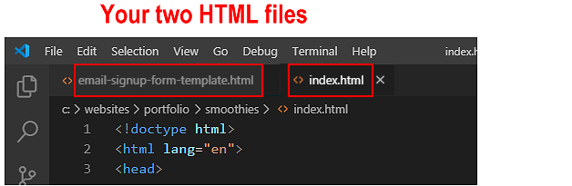
This will help you to focus only on the two HTML files you will be working with.
Adding the <head> link for the Font Awesome icons
Your Email Sign-up Form will use a Font Awesome 5 icon. So you need to include a link to the Font Awesome stylesheet CSS file.
In the <head> of the index.html web page, just before the closing </head> tag, copy-and-paste the following comment line and code.
<!-- Link to icons for Font Awesome 5 -->
<linkhref="https://cdnjs.cloudflare.com/ajax/libs/font-awesome/5.14.0/css/all.min.css"rel="stylesheet"integrity="sha512-1PKOgIY59xJ8Co8+NE6FZ+LOAZKjy+KY8iq0G4B3CyeY6wYHN3yt9PW0XpSriVlkMXe40PTKnXrLnZ9+fkDaog=="crossorigin="anonymous">
The pasted comment and Font Awesome link should now look as follows.
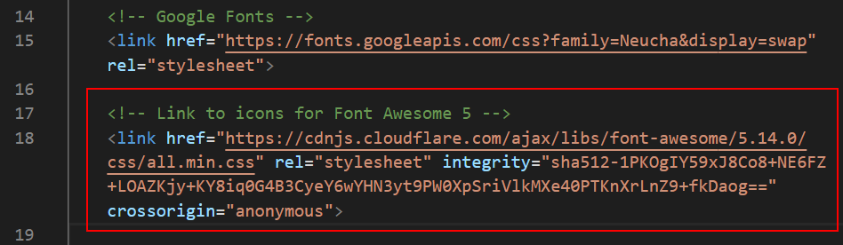
When finished, save your index.html web page.
Copying-and-pasting the form HTML
Your next step is to copy content from the template file into your index.html web page.
In the email-signup-form-template.html file, select and copy the form HTML.
In your index.html web page, scroll down to near the end of the web page, to just before the closing </body> tag.
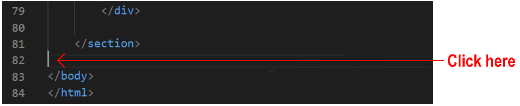
Press the ENTER key a few times to open up some new lines of blank space.
Paste the copied form HTML.
When finished, save your index.html web page.
You can now close the email-signup-form-template.html file.
Working with your two CSS files
Your next task is to work with two CSS files:
The template CSS file you will copy from and
The stylesheet you will copy to.
In Visual Studio Code, from your websites\templates folder, open the following CSS file:
email-sign-up-form-template.css
From your websites\portfolio\smoothies\assets\css folder, open your stylesheet named style.css.
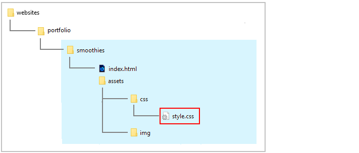
If you have any other files open in Visual Studio Code, you may wish to close them.
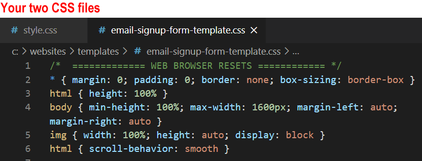
This will help you to focus only on the two CSS files you will be working with.
Copying-and-pasting the form CSS
Your next step is to copy content from the template CSS file into your style.css stylesheet.
In the email-sign-up-form-template.css file, select and copy the form styles.
In your style.css file, scroll down to the end of the stylesheet and click on the last empty line.
Press the ENTER key a few times to open up some new lines of blank space.
On the new last line, paste the copied form CSS.
When finished, save your style.css stylesheet.
You can now close the email-sign-up-form-template.css file.
In your web browser, the Email Sign-up Form should now look as shown below.
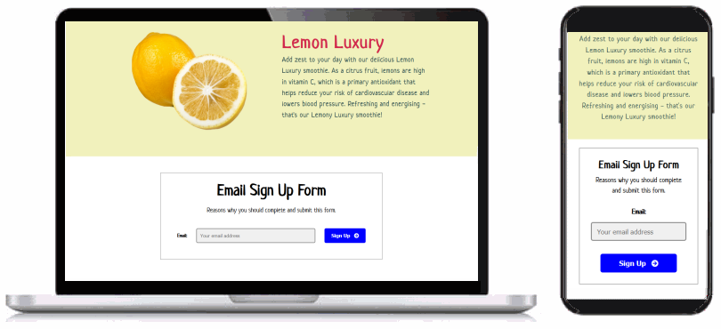
Updating the HTML of your form
Your next stap is to edit the text of the Email Sign-up Form you copied from the template file.
In VS Code, display your index.html web page.
Scroll down to the form, and edit the <h3> sub-heading and <p> text of the form as follows.
<h3>Join our email list</h3>
<p>Keep me up-to-date with your latest healthy smoothie recipes and special offers.</p>
Edit the text of the form submit button from ‘Sign Up‘ to ‘Subscribe’ and change the Font Awesome icon.
You can display a finished version of the project web page by clicking the image below.
In later Tutorials for this portfolio project you will add a footer and menus.
Uploading your project to GitHub
All the files you have updated for this project are in the smoothies sub-folder of your websites/portfolio folder.
So the easiest option is simply to upload the entiresmoothies sub-folder to your account on GitHub.
If you are not already signed in to your GitHub account, sign in now.
On the left of your GitHub home page, click the name of the repository that holds your web pages.
On the next GitHub screen displayed, click the portfolio folder.
GitHub should now display your portfolio folder.
With the portfolio folder displayed on your GitHub screen, click the Add file button and, from the dropdown list displayed, choose the option Upload files.
In File/Windows Explorer on your computer, display your portfolio folder and then drag-and-drop the smoothies folder to the GitHub tab in your web browser.
After uploading the smoothies folder, scroll down to the bottom of the GitHub screen, enter a short message in the Commit changes box, click the Commit changes button, and wait for the upload to complete.
Your updated ‘Smoothies’ project web page is now published on GitHub at a web address similar to the following, where username is the username you have chosen for your GitHub account:
It may take a few minutes for your uploaded files to appear on GitHub.
Activating your form on Formspree
Your final step is to activate your Formspree-processed form. Here's how.
In your web browser, go to the uploaded Smoothie project web page on your website.
Test your form by clicking (or, on a mobile phone, tapping) the Subscribe button without entering any details in the form field. You should see an error message such as that below.
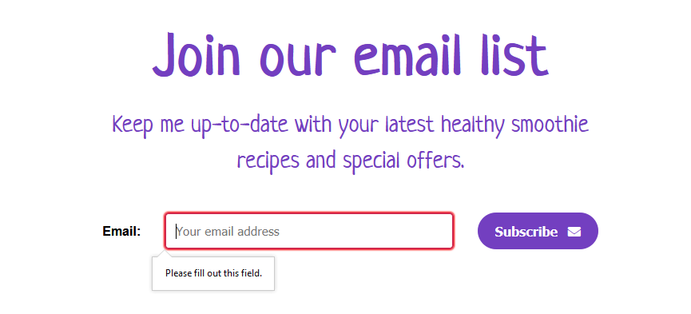
Follow the instruction in the error message until clicking/tapping the Subscribe button successfully submits the form.
Your form is now passed to the Formspree service and you will be presented with an “I am not a robot” test. This is to protect your form against spam.
After you have proved you are not a robot, you are next shown a screen similar to the following.
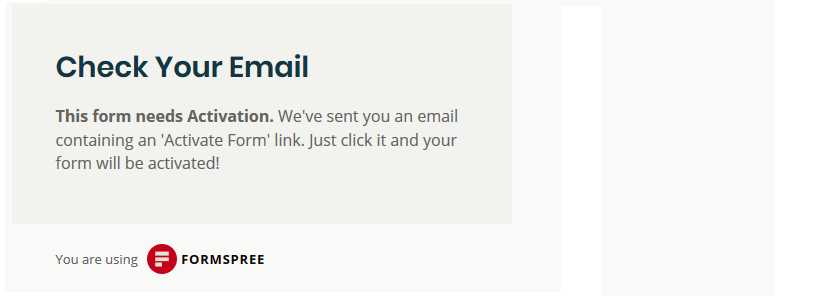
This message is only shown the first time a new form is submitted from a particular web address.
The activation message is sent by Formspree to the email address you entered in the opening <form...> tag in the index.html file.
Go to your email account, open the email sent to you by Formspree, and click the Activate Form button.
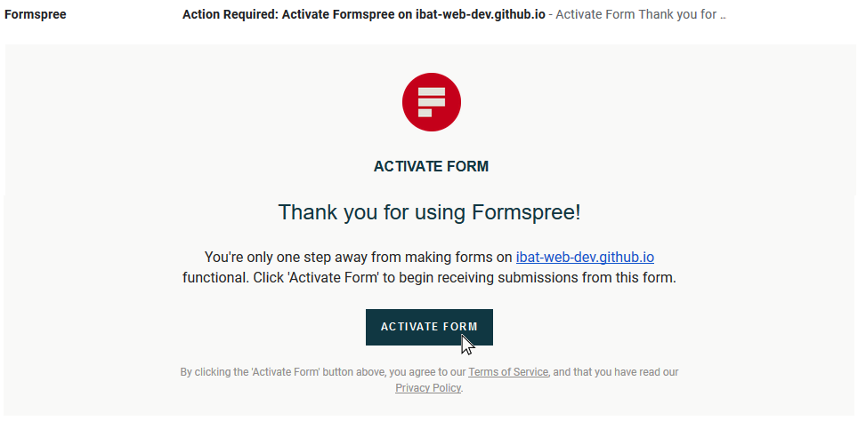
You will next see a message telling you that your form is now active.
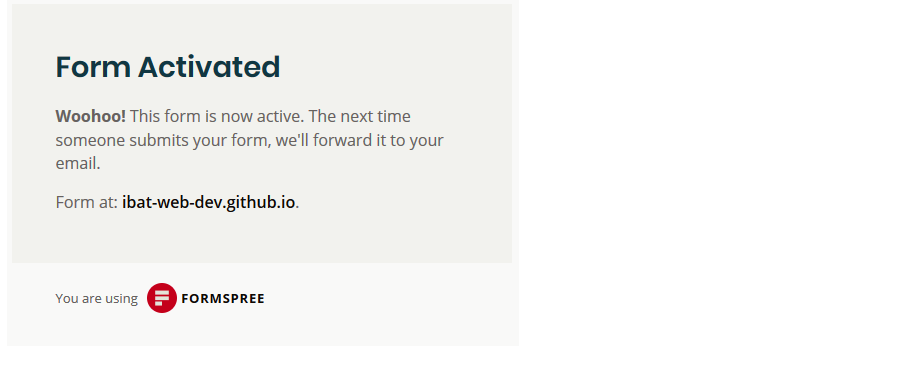
In future, when a user enters their details to the contact form on your website, they will see the following confirmation message after they click/tap the Send button and pass the “I am not a robot” test.
Formspree will immediately forward the submitted information to your email account. See the example below.
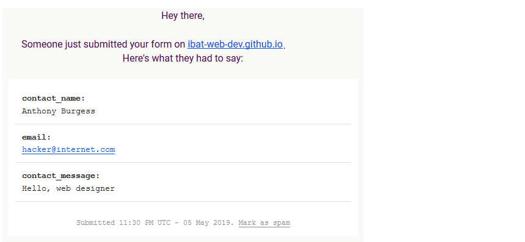
That’s it. You now have a working contact form on your website.


 Formspree will immediately forward the submitted information to your email account. See the example below.
Formspree will immediately forward the submitted information to your email account. See the example below.